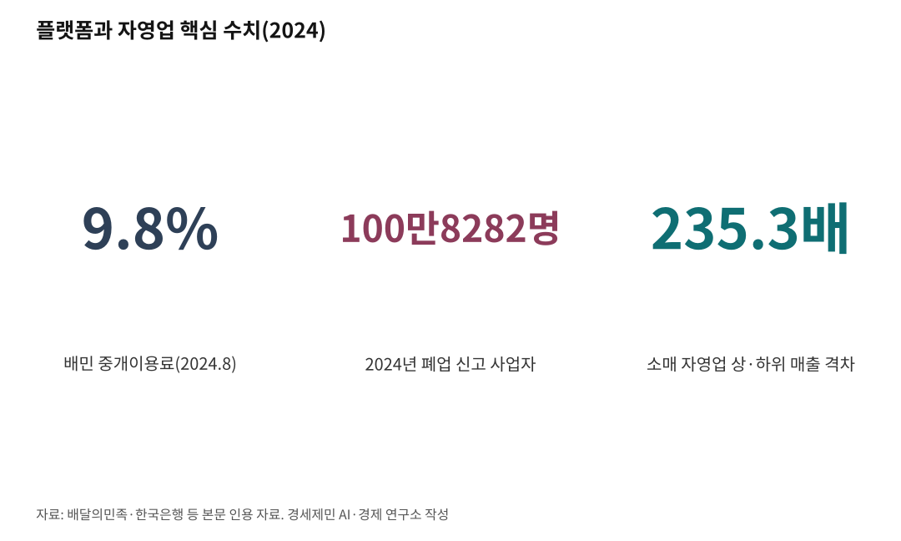

[한국경제 불편한 진실⑫] 플랫폼 — 주문 한 건에 매출 3할이 사라진다
배달 중개이용료는 6.8%에서 9.8%로 올랐다가 거래액별 2.0~7.8%로 갈렸다
2024년 폐업자 100만8282명, 통계 집계 30년 만에 처음 100만명을 넘었다
자영업 상·하위 매출 격차는 5년 새 110배에서 235배로 벌어졌다
AI경세제민=김갑봉 기자 | 스마트폰으로 치킨 한 마리를 시킨다. 소비자가 2만원을 내도 가게 주인 손에 남는 몫은 생각보다 얇다. 주문 버튼과 주방 사이에 플랫폼이 있다. 편리함의 값은 누가 치르나.
주문 한 건에서 빠져나가는 돈
배달의민족은 2024년 8월 중개이용료(주문을 연결해 주고 받는 수수료)를 6.8%에서 9.8%로 올렸다. 부가가치세를 더하면 10.8%다. 여기에 배달대행료 건당 3000~5000원, 카드결제수수료 1.5~2.0%가 붙는다. 다 합치면 배달 한 건에서 매출의 4분의 1에서 3분의 1이 플랫폼과 대행업체로 빠진다. 재료비와 임차료, 인건비를 빼고 나면 주인 몫은 더 얇아진다.
온라인 쇼핑도 다르지 않다. 쿠팡 마켓플레이스 판매수수료는 품목에 따라 4~10.8%다. 팔수록 수수료가 따라붙는다.

플랫폼은 벌고, 이익은 바다를 건넜다
가게에서 빠져나간 돈은 어디로 갔나. 배달의민족을 운영하는 우아한형제들은 2024년 매출 4조3226억원을 올렸다. 1년 전보다 26.6% 늘었다. 수수료를 올린 바로 그해다. 영업이익은 6408억원이다.
그 이익도 국내에 머물지 않았다. 우아한형제들이 2년간 독일 모회사 딜리버리히어로에 보낸 배당금은 약 1조원이다. 골목의 치킨값에서 떼인 수수료가 바다를 건너는 구조다.
격차는 5년 새 두 배로
한국은행은 2025년 7월 온라인 플랫폼이 자영업 양극화를 키웠다고 분석했다. 소매 자영업의 분배율(매출 상위 20%와 하위 20%의 격차 배율)은 2018~2019년 109.9배에서 2022~2023년 235.3배로 벌어졌다.
배달 비중이 10%포인트 오르면 대규모와 소규모 음식점의 매출 성장률 격차가 수도권에서 3.2%포인트, 비수도권에서 6.3%포인트 커졌다. 같은 조건에서 인구 1만명당 음식점 자영업자는 3.4명 줄었다. 노출 경쟁에서 밀린 가게가 먼저 문을 닫았다. 타격은 지방에서 더 컸다.
폐업 100만명, 그 뒤의 종속
2024년 폐업을 신고한 사업자는 100만8282명이다. 1995년 통계 집계 이후 처음 100만명을 넘었다. 이 가운데 50만6198명(50.2%)이 사업부진을 폐업 사유로 들었고, 업종별로는 소매업 폐업자가 29만9642명으로 가장 많았다.
손님을 받으려면 플랫폼에 들어가야 하고, 들어가면 수수료를 떼인다. 빠져나갈 출구가 좁은 구조에 갇힌 자영업자를 두고 디지털 소작농이라는 말이 나온다.
장 티롤(Jean Tirole, 2014년 노벨경제학상 수상자)은 판매자와 소비자를 동시에 잇는 양면시장에서 플랫폼이 양쪽의 가격을 좌우하는 구조를 분석했다. 길목을 쥔 쪽이 값을 정한다.
정산이 멈추자 가게가 멈췄다
종속의 위험은 2024년 여름 터졌다. 티몬과 위메프가 판매대금 정산을 멈추면서, 금융감독원 집계로 4만8124개 업체가 1조2789억원을 받지 못했다. 피해액의 88%는 미정산금 1억원 이상인 981개 업체에 몰렸다. 물건은 팔렸는데 돈은 플랫폼 안에서 사라졌다.
판로를 플랫폼에 맡긴 가게는 정산이 며칠만 멈춰도 생사가 갈린다. 한국은행은 같은 위험이 배달대행 등 다른 업종에서도 되풀이될 수 있다고 경고했다.
칼자루는 누가 쥐나
수수료를 정하는 쪽은 플랫폼이다. 2024년 가을 정부가 상생협의체를 꾸려 100일 넘게 끌고서야 합의가 나왔다. 배민과 쿠팡이츠는 2025년부터 3년간 중개이용료를 거래액에 따라 2.0~7.8%로 차등 적용한다.
그사이 배달앱 시장은 배민이 1위를 지키고 쿠팡이츠가 빠르게 따라붙어 서울에서는 선두를 주고받는다. 소수 플랫폼이 길목을 쥔 구조는 그대로다.
유럽연합은 2024년부터 디지털시장법(DMA)을 시행해 거대 플랫폼을 게이트키퍼(gatekeeper, 시장 길목을 지키는 문지기)로 지정하고 자사 우대 같은 행위를 사전에 금지했다. 한국의 온라인플랫폼법은 수년째 논의만 오간다. 국회와 정부는 2026년 들어 제정을 다시 밀고 있다. 매출 100억원, 거래액 1000억원을 넘는 쿠팡·네이버·배민 등이 1순위 규제 대상으로 거론된다. 법이 언제 어떤 모습으로 나올지는 아직 정해지지 않았다.
수수료는 고지서에 찍히지 않는 세금처럼 걷힌다. 다만 세금과 달리 쓰임새를 국회가 심사하지도, 국민이 투표로 바꾸지도 못한다. 길목을 쥔 사기업이 정하는 값이기 때문이다.
편리한 주문 버튼 뒤에서 누가 이익을 가져가고 누가 비용을 떠안는지는 화면에 표시되지 않는다.
※ 이 기사는 AI 프로그램 클로드 오퍼스 4.8을 활용해 작성했다.
참고문헌
· "배민, 수수료 6.8%→9.8%로 인상…'경쟁 대응 위해 불가피'", ZDNet코리아, 2024.7.10. https://zdnet.co.kr/view/?no=20240710094858
· "[심층 분석] 배달 수수료 9.8%의 늪…'팔면 팔수록 손해'", 비즈포커스. https://bizfocus.kr/news/newsview.php?ncode=1065587443610360&dt=m
· "배달앱 수수료 7.8%로 인하…'배민 상생안' 극적 합의", ZDNet코리아, 2024.11.14. https://zdnet.co.kr/view/?no=20241114184425
· "배민, 2월 26일부터 중개 수수료 낮춘다…9.8→2.0~7.8%", 한국일보, 2025.1.22. https://www.hankookilbo.com/News/Read/A2025012209340005718
· "우아한형제들, 2024년 매출 4조3226억원, 영업이익 6408억원", 플래텀, 2025.4.4. https://platum.kr/archives/256497
· "매출 늘고 이익 준 배민, 2년 간 DH로 1조 갔다", 바이라인네트워크, 2025.4.4. https://byline.network/2025/04/04_baemin/
· "한은 '배달플랫폼, 자영업자 양극화 심화…비수도권 타격 더 컸다'", 머니투데이, 2025.7.17. https://www.mt.co.kr/economy/2025/07/17/2025071713041798054
· "'티메프' 사태 미정산금 1조3천억…업체 2%에 피해액 88% 집중", 경향신문, 2024.8.25. https://www.khan.co.kr/article/202408251700001
· "2024년 폐업 자영업자 100만명 넘어", 세계일보, 2025.7.6. https://www.segye.com/newsView/20250706503716
· "맛집마저 사라진다 싶더니…지난해 폐업자 첫 100만명 돌파", 농민신문, 2025.7.6. https://www.nongmin.com/article/20250706500057
· "[2026 10대 핫이슈] 온라인 플랫폼 규제 본격화", 전자신문, 2025.12.27. https://www.etnews.com/20251227000019
· "쿠팡 마켓플레이스 카테고리별 판매 수수료", 쿠팡. https://cloud.mkt.coupang.com/Fee-Table
· "흔들리는 배달앱 시장…쿠팡이츠-배민 격차 '확' 줄었다", 디지털투데이. https://www.digitaltoday.co.kr/news/articleView.html?idxno=607579
사진 출처
· [대표사진] Fumikas Sagisavas, "2024.11.07 Delivery rider is loaded on a sedan.jpg", 위키미디어 공용, CC0, https://commons.wikimedia.org/wiki/File:2024.11.07_Delivery_rider_is_loaded_on_a_sedan.jpg
※ 이 브리핑은 인공지능을 활용해 작성했습니다.
관련기사
- [한국경제 불편한 진실⑬] 에너지 — 싼 전기요금은 공짜가 아니라 '외상'이다
- [한국경제 불편한 진실⑭] 식량 — 값싼 수입 밥상은 공짜가 아니라 '보험 미가입'이다
- [주식공부] 코스피 12.13% 하락, 자사주 끊긴 자리에 선 개인
- 노후계획도시 선도지구, 분담금은 용적률 두 구간에서 갈린다
저작권자 © AI경세제민 무단전재 및 재배포, AI학습 및 활용 금지